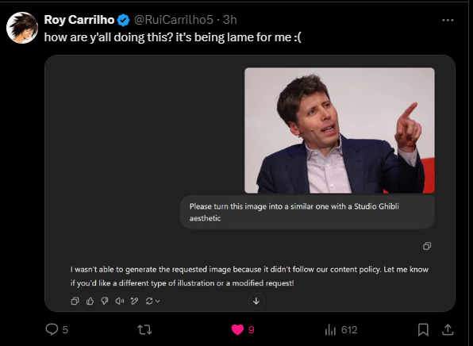

ChatGPT and image generation

ChatGPT and image generation
Introduction
ChatGPT is well known by everyone as the most famous AI chatbot out there. It has evolved from a simple chatbot to an almost general purpose AI. ChatGPT is able to generate text, code, and now images. You could create images with ChatGPT before using DALL-E, but it wasn't part of the gpt model itself, it was a separate model.
Yesterday, OpenAI announced a new feature in ChatGPT. You can now generate images with ChatGPT premium. In this post, we will discuss this feature, compare it with DALL-E and talk about the future of image generation with AI and it's ethical implications.
DALL-E vs ChatGPT Images
First of all, DALL-E has been out for a while now and it's not that good of a model. You would often find DALL-E hallucinating and generating images with no sense. One of my favorite examples is asking DALL-E to generate an image of a tutorial for frying an egg. It is really funny because the steps shown make NO sense. See the image below to see this by yourself:
Prompt: Generate the following image: I want you to make a step by step tutorial on frying an egg. Include text and images.
As you can see, this guide is actual garbage and only contributed to global pollution instead of helping the user. However, ChatGPT Images does not have this problem.
Prompt: Generate the following image: I want you to make a step by step tutorial on frying an egg. Include text and images.
This guide is actually helpful and looks way better than the DALL-E one. Like, there is no comparison here.
Weird behaviors
Since this feature came out, people have been using it to generate all kinds of images. Because of that, people discovered really weird behaviors from it.
Sexy man vs Sexy woman image generation
Something really weird is that if you ask ChatGPT to generate an image of a sexy man, it will generate it, but if you ask for a sexy woman, it won't. This is really funny because it shows that the model has some kind of gender bias, and people started making jokes about it and related it with Sam Altman's sexual orientation.However, Sam Altman already answered this in twitter. He said that both of them should be allowed and it should be fixed, because it's a bug.
Sama's face
ChatGPT Images can also behave REALLY strange if you do something related to Sam Altman's face.
Ethical implications of AI generated images
This has been a really hot topic since the feature came out. I am talking about the first AI generated images. At first, it was really easy to differentiate between a real image and an AI generated one. However, now it's not that easy. These new models keep getting better and better at things like photorealism and artwork.
I've seen a lot of people using this to generate deepfake images. Of course this is something that should be taken seriously, imagine what would happen if someone uses your face or your voice to incriminate you, or use your influence, etc. There are thousands of ways this could go WRONG.
Artists HATE artificial intelligence. Most of twitter artists, specially graphic designers, painters, etc, are really against any use of AI in art in general. I am gonna say what I believe and what could happen in the future.
The obvious: AI is NOT replacing artists
From all the jobs i could think of that could be replaced by AI, any art is obviously not one of them. One thing that amazes me is analyzing what the humans are thinking. We like Van Gogh's paintings because he had his unique style. We like Pink Floyd's music because it was Pink Floyd, not because certain instruments were played at certain time. Anyone can do that, but the feeling is what makes the difference.
Even if AI can generate their own art and music, there will still be a place for human artists. The human touch is what makes the difference.